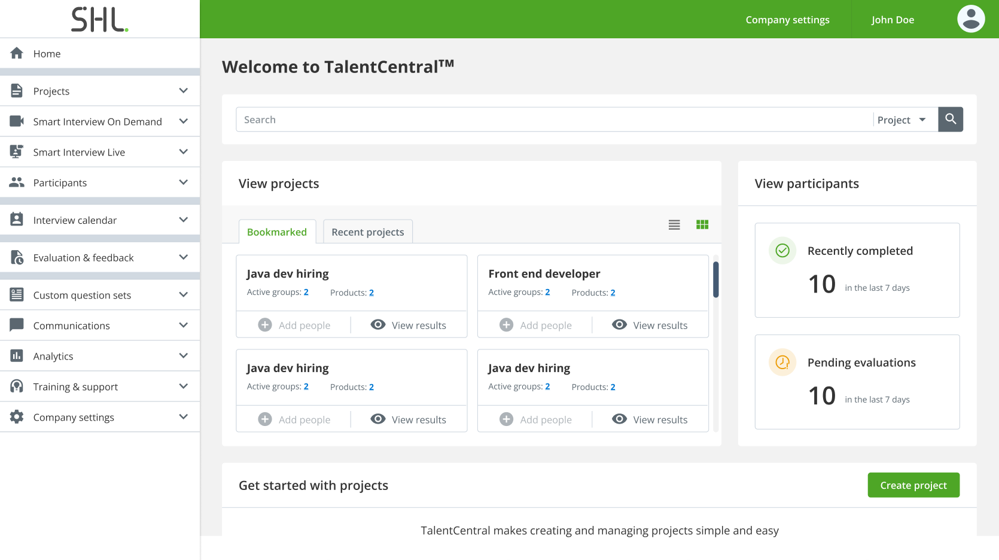
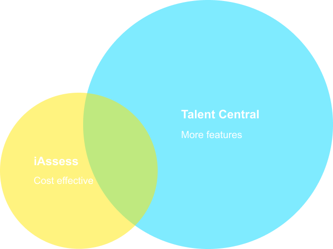
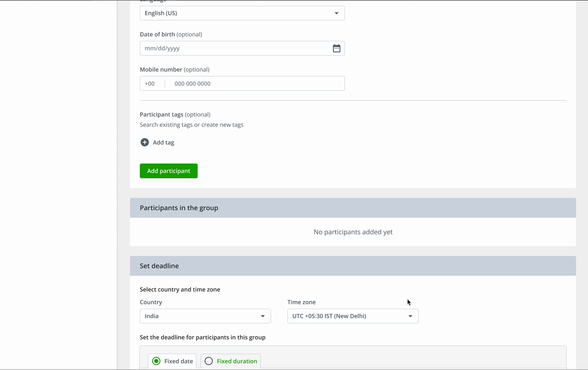
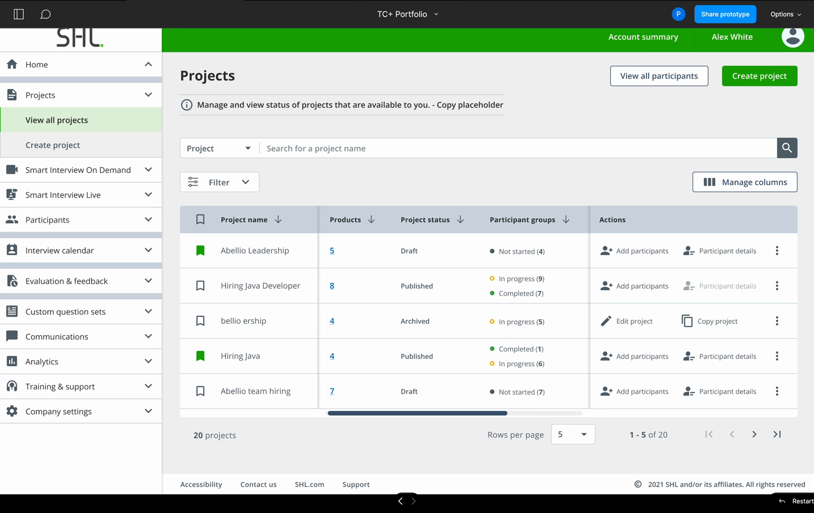
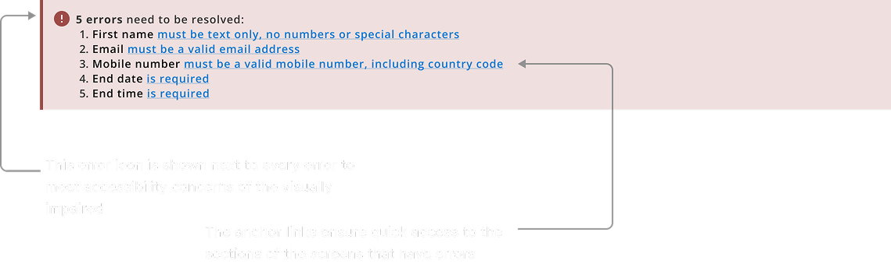
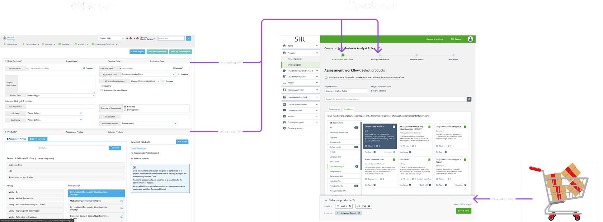
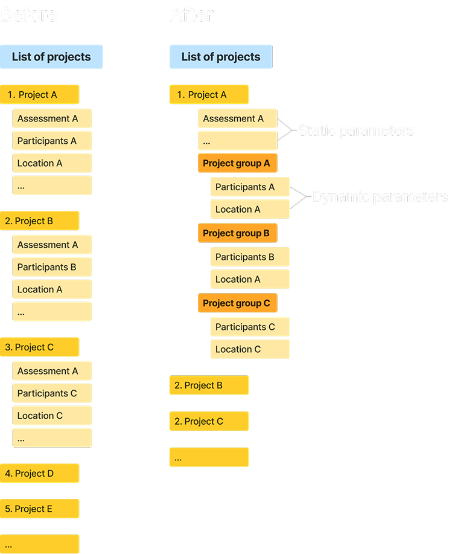

TalentCentral+ · SHL
Recruiters didn't need more projects. They needed reuse.
Rebuilding the core project-creation workflow in SHL's recruiting platform, so high-volume hiring teams stop duplicating work, and the system finally behaves consistently.
- My role
- UX Designer: research, workflow, validation
- Team
- Sr. PM, engineering, QA, operations
- Scope
- Core workflow + system-level patterns
- Platform
- Web · enterprise B2B SaaS

TalentCentral+ brings project and candidate management into one place, the surface recruiters live in every day.
fewer projects created for the same volume of hiring
one project now serves many hiring drives, instead of one-and-done
shared patterns for errors, uploads, and validation across modules
The problem
Two platforms, stitched together by an acquisition, and a workflow that punished repeat work.

After an acquisition, recruiters had to run hiring across two separate systems: Talent Central for projects and candidates, and iAssess for assessment creation and reporting. Each was capable on its own, but used together, they forced constant context-switching, duplicated effort, and near-identical workflows living in disconnected places.
When I looked at how recruiters actually worked, three problems kept surfacing:
- Duplicate projects. For every similar hiring drive, recruiters built a brand-new project and recreated the same assessment structure, wasting effort and cluttering the system.
- A rigid setup flow. Adding candidates was mandatory at the moment of creation. There was no way to set up a project now and add people later, so recruiters were forced into premature decisions.
- Inconsistent building blocks. Common actions, error handling, Excel uploads, validation, behaved differently in every module, so recruiters had to relearn the same task repeatedly and trusted the system less.
My role
I owned the research and design for the workflow redesign, and worked shoulder-to-shoulder with the Sr. PM and engineering to make it real.
- Ran the research and usability validation behind the new model.
- Led the workflow redesign and the core UX decisions.
- Presented and defended the design rationale with research evidence, not opinion.
- Joined tech grooming to keep the solution feasible and clearly scoped.
Aligning a wide group: PM, engineering, QA, operations, deployment, on one workflow change. Filled chips are the people I collaborated with daily.
The reframe
The request was "make it faster to create projects." The real problem was that recruiters were creating projects at all. They didn't need more projects, they needed to reuse and extend the ones they already had.
That shift, from speeding up duplication to eliminating it, is what the whole design turned on.
The solution: Project Groups
I split two things the old flow had fused together: project structure and participant management. Once those were separate, a project could become a reusable container rather than a one-time event.
A container you reuse, not recreate
Project Groups let a recruiter set up the assessment structure once and reuse it across every similar hiring drive. The same rigorous setup, without rebuilding it each time, and far less clutter to search through later.
Add people when you're ready
Adding participants became optional and revisitable instead of mandatory and upfront. Recruiters can stand up a project now and add or manage people whenever candidates actually arrive, the flow stops forcing decisions before they're due.

Compare across the group
Because related hiring now lives in one group, scores and statistics can be compared across drives, a capability that simply wasn't possible when every hire was an island. It opened a new roadmap direction for talent analytics.

Consistency at scale
The reuse model fixed the big structural problem. But recruiters also lost trust in a dozen small ways, every module handled the same action differently. So I mapped the shared behaviors, error handling, Excel uploads, validation, and standardized them into patterns the whole platform could use.
Errors you can't miss
A summary card pins every error to the top of the page, each with an icon for screen-reader users and an anchor link that jumps straight to the field.

Bulk upload
One consistent Excel flow adds people at volume, 940 in a single upload, with new users auto-invited to verify their accounts.
Filters
One filtering pattern, so the same action feels the same everywhere it appears.
Consistency here wasn't visual polish, it was behavioral. Same action, same outcome, everywhere.
Impact
reduction in projects created, the same hiring, a fraction of the clutter
searchability and tracking improved sharply once duplication stopped
cross-group score comparison became a roadmap opportunity

The old project-creation form (left) versus the new TC+ create flow (right).
Beyond the headline number, the redesign reduced cognitive load, made repetitive tasks faster, and rebuilt confidence in how the system behaves. Recruiters could finally set up once, reuse often, and trust that the same action worked the same way twice.
Reflection
This project is the clearest example of a lesson I keep relearning: the brief is rarely the problem. "Make project creation faster" would have produced a faster version of the wrong thing. The win came from stepping back to ask why recruiters were creating so many projects in the first place.
It also taught me that a systemic fix has two halves: the structural reframe and the unglamorous consistency work underneath it. Both are what made recruiters trust the platform again.

The reframe, structurally: one shared assessment, many reusable groups.